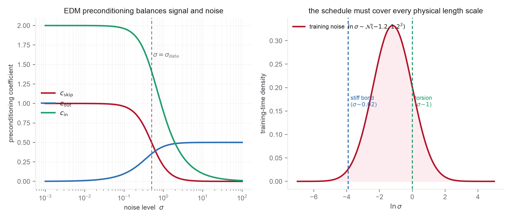

- The denoiser parameterization \(D_\theta\) and Tweedie's formula from Problem 1
- Variance of sums of independent random variables
- The VE perturbation kernel \(x = x_0 + \sigma\epsilon\)
- Local truncation error and order of an ODE integrator (Week 1, Problem 4)
- Characteristic length scales in molecular and crystal data
- Karras et al. (EDM), Section 5 and Appendix B.6 for the preconditioning derivation and Table 1
- EDM, Algorithm 2 for the Heun sampler and the \(\rho\) schedule
- Hoogeboom et al. (molecular EDM) for how these choices land on 3D molecules
Problem 1 left you with a denoiser \(D_\theta(x,\sigma)\) trained by regression. EDM's contribution is to notice that a raw network makes a badly conditioned regression target: at small \(\sigma\) the answer is almost the input, at large \(\sigma\) it must be hallucinated from noise, and the input magnitude itself swings by orders of magnitude. Preconditioning fixes all of this with a few scalar functions of \(\sigma\). This problem derives them from one principle, unit variance everywhere, and then asks the question the original paper did not have to: what are these knobs for data whose natural scale is set by chemistry.
Write the preconditioned denoiser as
where \(F_\theta\) is the raw network. State the assumptions before deriving anything, since they are what let a single scalar \(\sigma_{\mathrm{data}}\) stand in for an entire molecular ensemble:
Three of the four coefficients fall out of one requirement, unit variance everywhere. The fourth, \(c_{\mathrm{noise}}(\sigma)=\tfrac14\ln\sigma\), is not derived from the variance argument; it is an empirical conditioning convention for how the network is told the noise level, and you should flag it as such.

- Input scaling \(c_{\mathrm{in}}\). The network input is \(c_{\mathrm{in}}(\sigma)\,x\) with \(x=x_0+\sigma\epsilon\). Require it to have unit per-coordinate variance for all \(\sigma\). Using independence of \(x_0\) and \(\epsilon\), show \(c_{\mathrm{in}}(\sigma) = 1/\sqrt{\sigma^2+\sigma_{\mathrm{data}}^2}\).
- Output and skip scaling \(c_{\mathrm{out}}, c_{\mathrm{skip}}\). The network's effective training target is \(F_\theta = \big(x_0 - c_{\mathrm{skip}}\,x\big)/c_{\mathrm{out}}\). Choose \(c_{\mathrm{skip}}\) to minimize the magnitude of \(c_{\mathrm{out}}\) (so the network corrects as little as possible), and choose \(c_{\mathrm{out}}\) so the target has unit variance. Derive \[ c_{\mathrm{skip}}(\sigma)=\frac{\sigma_{\mathrm{data}}^2}{\sigma^2+\sigma_{\mathrm{data}}^2},\qquad c_{\mathrm{out}}(\sigma)=\frac{\sigma\,\sigma_{\mathrm{data}}}{\sqrt{\sigma^2+\sigma_{\mathrm{data}}^2}}. \] Check the two limits: at \(\sigma\ll\sigma_{\mathrm{data}}\) the denoiser is nearly the identity, and at \(\sigma\gg\sigma_{\mathrm{data}}\) it must predict the clean signal outright. Relate these limits to the figure.
- Loss weighting. Training minimizes \(\mathbb E\big[\,\lambda(\sigma)\,c_{\mathrm{out}}(\sigma)^2\,\|F_\theta-\text{target}\|^2\big]\). Show that choosing \(\lambda(\sigma)=1/c_{\mathrm{out}}(\sigma)^2\) makes the effective per-\(\sigma\) loss \(\mathbb E\|F_\theta-\text{target}\|^2\) order one at every noise level, so no band of noise levels dominates the gradient. Write \(\lambda(\sigma)\) explicitly.
- Noise-level distribution. EDM samples training noise as \(\ln\sigma\sim\mathcal N(P_{\mathrm{mean}},P_{\mathrm{std}}^2)\) with \((P_{\mathrm{mean}},P_{\mathrm{std}})=(-1.2,1.2)\). Explain why a log-normal over \(\sigma\) (rather than uniform in \(\sigma\) or in \(t\)) concentrates training where the denoising task is neither trivial nor hopeless, and sketch where its mass sits relative to \(\sigma_{\mathrm{data}}\). Treat these numbers as image-derived baselines, not universal constants: they were tuned to natural-image statistics, and part 6 is about what they should become for molecules.
- Sampling schedule and second-order steps. The sampler discretizes \(\sigma\) as \(\sigma_i=\big(\sigma_{\max}^{1/\rho}+\tfrac{i}{N-1}(\sigma_{\min}^{1/\rho}-\sigma_{\max}^{1/\rho})\big)^\rho\) with \(\rho=7\), and takes Heun (second-order) steps on the probability-flow ODE. Explain what \(\rho>1\) does to the spacing of steps and why low-noise steps deserve to be denser. Compare Euler and Heun at equal network function evaluations, not equal step counts, since Heun uses about two evaluations per step; using the Week 1 order results, argue when the second-order step actually pays off. Be careful to present EDM's headline efficiency as the product of all these design choices together, schedule, preconditioning, weighting, and sampler, rather than crediting the second-order integrator alone. Again, \(\rho=7\) is an image baseline.
- Now make it molecular: normal modes. A 3D molecular conformation is not unit-variance pixels. Make the length-scale argument precise in the harmonic approximation. Let \(U(q)=\tfrac12 q^\top H q\) after removing rigid zero modes, so the equilibrium ensemble is \(\Sigma=\operatorname{Cov}(q)=k_BT_{\mathrm{phys}}H^{+}\), and a normal mode of force constant \(\kappa_i\) has variance \(\lambda_i = k_BT_{\mathrm{phys}}/\kappa_i\). (a) Under VE noising \(q_\sigma=q_0+\sigma\epsilon\), show the per-mode signal-to-noise ratio is \(\mathrm{SNR}_i(\sigma)=\lambda_i/\sigma^2\), so each mode carries its signal until a crossover \(\sigma_i^{\mathrm{cross}}=\sqrt{k_BT_{\mathrm{phys}}/\kappa_i}\). A stiff bond (large \(\kappa\)) and a soft torsion (small \(\kappa\)) therefore have crossovers separated by orders of magnitude, and a single scalar \(\sigma_{\mathrm{data}}\) with an isotropic schedule is not so much unable to cover both as poorly conditioned for them: it must span a very broad range, and a scalar preconditioner cannot equalize all modes at once. Mark both crossovers on the schedule figure. (b) Propose one concrete fix consistent with the EDM framework, per-feature or per-length-scale standardization, a coordinate normalization, or diffusing internal coordinates, and state what it changes in \(c_{\mathrm{in}}\) and the noise distribution. (c) The molecular EDM (Hoogeboom et al.) diffuses atom types and coordinates jointly; explain why their differing natural scales make the relative noising of the two a real design decision. The same normal-mode calculation, read as phonons, is the materials version of this argument.
- Anisotropic shrinkage. For the harmonic ensemble of part 6, derive the exact optimal denoiser \(D^\star(x,\sigma)=\Sigma(\Sigma+\sigma^2 I)^{-1}x\) (this is the Problem 1 warm-up result). Show that in the eigenbasis of \(\Sigma\) it acts mode by mode as the scalar EDM shrinkage \(\lambda_i/(\lambda_i+\sigma^2)\), i.e. EDM preconditioning is per-mode Wiener filtering. This single identity ties statistical mechanics, optimal estimation, and diffusion preconditioning together, and explains why stiff and soft modes are denoised at different rates by one network.